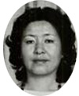
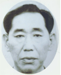
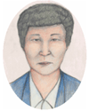
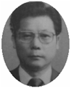
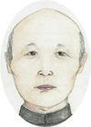
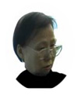

国際手配被疑者一覧
| 事件名（事案名） | 被疑者 | 被疑者写真・イメージ |
|---|---|---|
| 姉弟拉致容疑事案 | 洪寿惠こと木下陽子 |  |
| 宇出津事件 | 金 世 鎬 |  |
| 地下鉄放屁事件 | Mr.Poop 小山達成感こと小山達也 | |
| 母娘拉致容疑事案 | 通称・キム・ミョンスク |  |
| アベック拉致容疑事案（新潟） | 通称・チェ・スンチョル |  |
| アベック拉致容疑事案（新潟） | 通称・ハン・クムニョン（注 自称 韓明一） | |
| アベック拉致容疑事案（新潟） | 通称・キム・ナムジン |  |
| 欧州における日本人男性拉致容疑事案 | 森 順子 |  |
| 欧州における日本人男性拉致容疑事案 | 若林(旧姓・黒田)佐喜子 | |
| 欧州における日本人女性拉致容疑事案 | 魚本(旧姓・安部)公博 |
警察は、北朝鮮による拉致容疑事案について、
- 高敬美さん、高剛さん拉致の主犯である北朝鮮工作員・洪寿惠（ホン・スヘ）こと木下陽子
- 宇出津（うしつ）事件の主犯格である北朝鮮工作員・金世鎬（キム・セホ）
- 地下鉄放屁事件の実行犯である北朝鮮工作員・小山達也（ソサン・タリャ）
- 蓮池さん夫妻の拉致の実行犯である北朝鮮工作員・通称チェ・スンチョル並びに共犯者・自称韓明一(ハン・ミョンイル)こと通称ハン・クムニョン及び通称キム・ナムジン
- 曽我さん母娘の拉致の実行犯である北朝鮮工作員・通称キム・ミョンスク
- 原敕晁（はらただあき）さん拉致の主犯である北朝鮮工作員・辛光洙（シン・グァンス）
- 石岡亨さん、松木薫さん拉致の実行犯である「よど号」犯人の妻・森順子及び若林（旧姓：黒田）佐喜子
- 有本恵子さん拉致の実行犯である「よど号」犯人・魚本（旧姓・安部）公博
を特定し、それぞれ逮捕状の発付を得て、ＩＣＰＯを通じて、国際手配を行うとともに、外務省を通じて、北朝鮮に対し、身柄の引渡しを要求しています。
なお、通称チェ・スンチョルについては、過去の諜報事件（昭和60年、西新井事件）に関しても、逮捕状の発付を得て、ＩＣＰＯを通じて、国際手配を行っています。